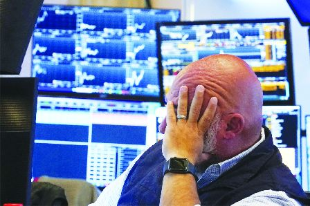
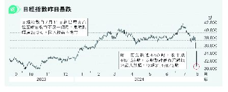

美国华尔街昨日气氛惨淡。（美联社）
美国股市昨日大幅下跌。（美联社）

美国经济数据弱于预期，引至全球股市下跌。美股道琼斯指数昨天（5日）下跌超过1000点，标准普尔500指数（The S&P 500）收市下跌了3%，可能创下自2022年以来的最严重跌幅。道琼斯工业平均指数下跌1034点（或2.6%），纳斯达克综合指数下跌3.8%。
大型科技股也出现了暴跌。苹果公司周一跌了4.82%。晶片公司英伟达（Nvidia）的跌幅.为6.36%。最近的抛售使Nvidia今年的收益从6月中旬的170%缩减至101.1%。
亚股、美期周二从跌市中反弹，日股升近一成，纳期升逾2%，韩股弹逾4%，台股升逾3%，A股、港股昨日跌幅相对轻微，反弹亦相对轻微。
比特币跌破5.4万元 黄金也跌约1%
周五（2日）的报告显示，美国雇主上个月的招聘速度放缓，远超经济学家的预期。这是最新一份美国经济弱于预期的数据，这一切都让人担心美联储已经通过高利率对美国经济踩了太久的刹车，希望以此抑制通胀。
专业投资者提醒，一些技术因素可能放大了市场的波动，下跌可能过头了，但跌幅仍然惊人。
韩国Kospi指数下跌8.8%，比特币从上周五的6.1万元跌破5.4万元。就连在动荡时期以安全著称的黄金也下跌了约1%。
原因之一是交易员猜测美国联邦储备局在9月18日做出下一次决定之前是否会下调利率。Annex Wealth Management首席经济学家雅各布森（Brian Jacobsen）表示：「美联储可能会来一次大幅降息救市，但两次会议之间降息的理由似乎并不充分。降息通常是为紧急情况准备的比如疫情，而4.3%的失业率看起来并不像紧急情况。」
当然，美国经济仍在增长，美国股市今年仍有健康的涨幅，经济衰退远非必然。美联储在2022年3月开始大幅加息时，就已经清楚地认识到，既不能过于激进，也不能过于软弱。
高盛（Goldman Sachs）经济学家梅里克（David Mericle）认为，在周五的就业报告公布后，未来12个月内经济衰退的可能性增加。但他认为这种可能性仍然只有25%，高于15%，原因之一是数据整体看起来不错，而且「没有看到重大的金融失衡」。
对企业利润、利率和经济的担忧也在拖累市场。以色列-哈马斯战争可能会恶化，除了造成人员伤亡外，还可能导致油价大幅波动。这加剧了人们对全球潜在热点问题的广泛担忧，而即将到来的美国大选可能会进一步扰乱局势。
料联储局今年减息3次 景顺：美经济或免衰退
巴克莱发表报告指出，由于美国劳动力市场数据较预期弱，料联储局今年将减息3次，分别于9月、11月和12月，每次25个基点；因此，预计联邦基金利率目标区间在今年底将保持在4.5至4.75厘，并料明年减息3次，于2025年底保持在3.75至4厘。
景顺首席环球市场策略师Kristina Hooper称，由于美国经济增长持续放缓，其投资策略已转向防御，并将在短期内持审慎态度。但她认为市场对美国经济将陷入衰退过分担忧，又认为联储局现在开始减息未算太迟；若联储局于9月开始放宽货币政策，美国将有望避免陷入经济衰退；而美国经济增长可能于今年底或2025年初再度加速。
Aaron Zhang, Local Journalism Initiative Reporter